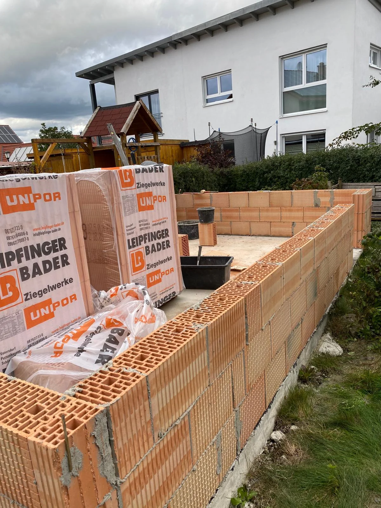
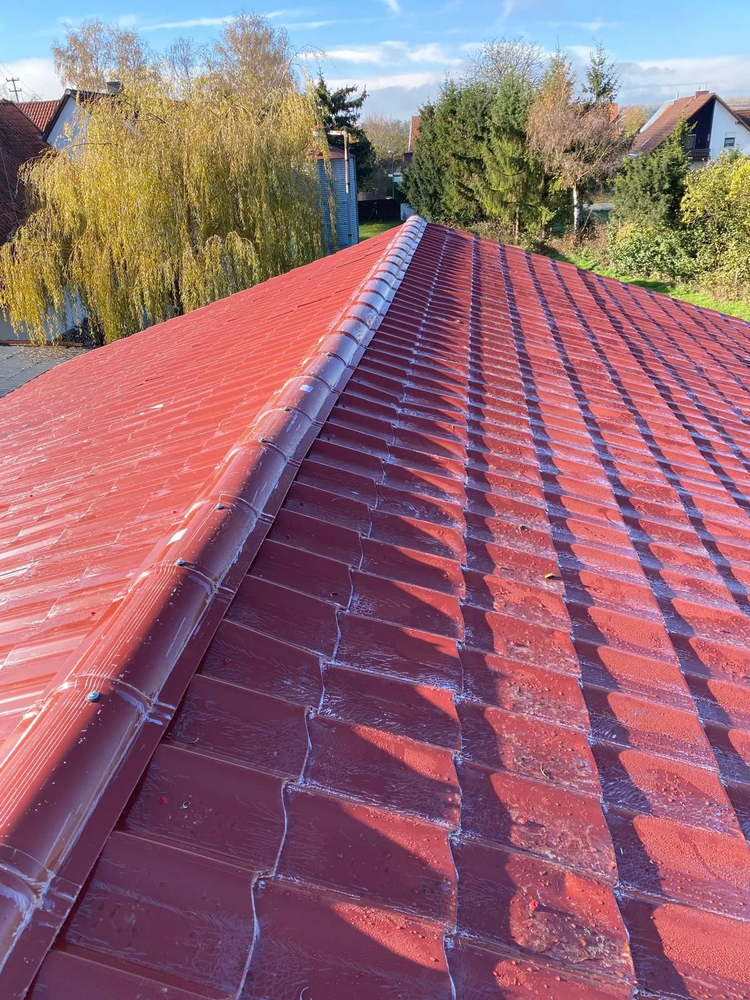
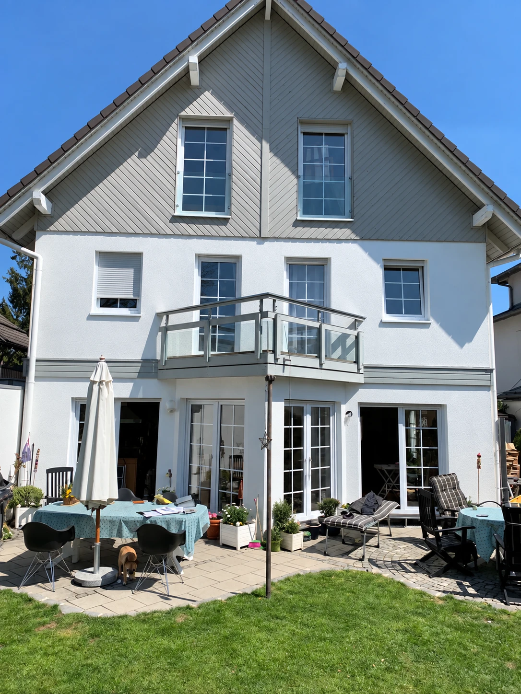
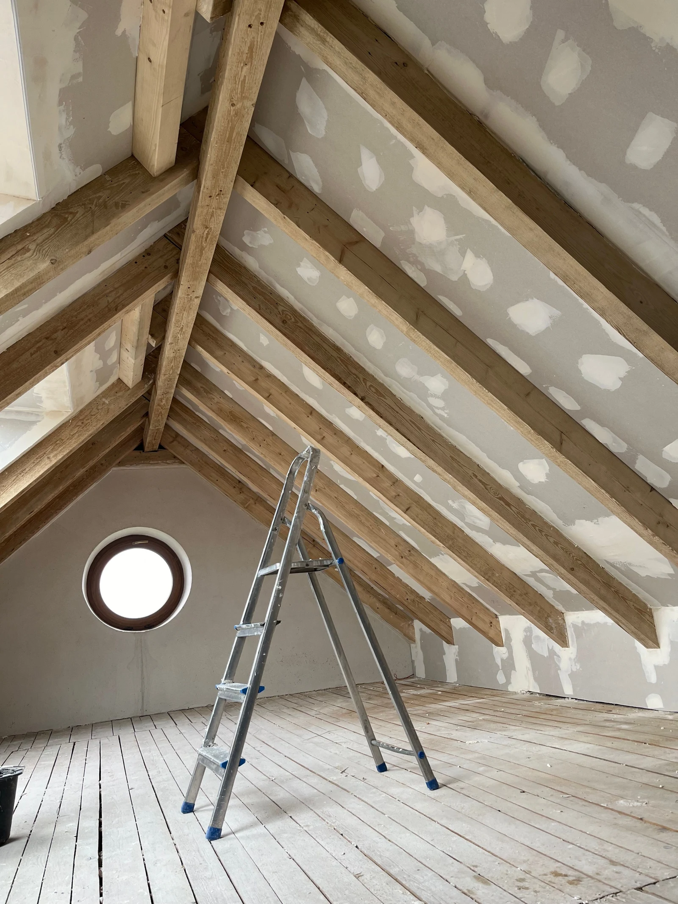
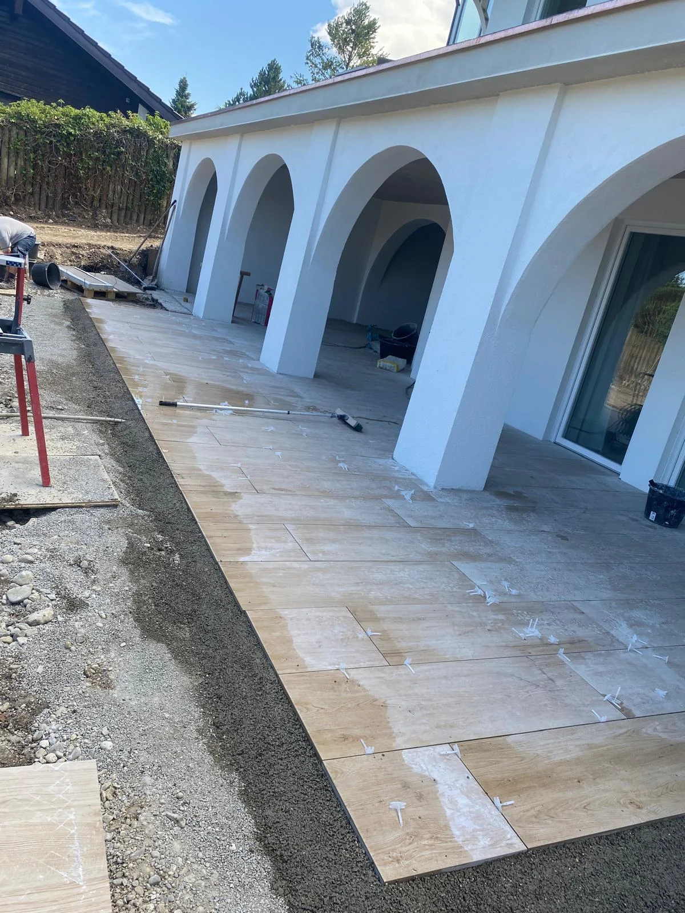

Ihr Haus. Unser Handwerk.
Von der ersten Veränderung bis zum neuen Wohnraum: Wir verbinden Rohbau, Umbau und Ausbau zu einem abgestimmten Vorhaben.

Dachflächen, Anschlüsse und Dämmung zusammen betrachten – für eine Gebäudehülle, die zu Ihrem Haus passt.

Putz, Anstrich, Wärmeschutz und neue Fenster geben Ihrem Gebäude Schutz, Charakter und eine neue Perspektive.

Vom neuen Grundriss bis zur letzten Fliese: Wir gestalten Innenräume mit Blick auf Nutzung, Material und saubere Übergänge.

Terrassen, Balkone, Wege und Einfassungen machen den Außenbereich zu einem Teil Ihres Zuhauses.

Seite nicht gefunden
Vielleicht hat sich die Adresse geändert. Auf der Startseite finden Sie alle Leistungsfelder.